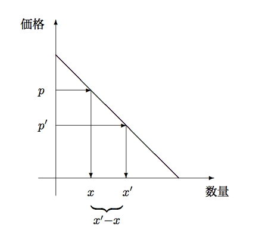

経済学で出る数学
ワークブックでじっくり攻める：応用問題
二段階値付けによる価格差別
ケータイ電話の複雑な料金体系は価格差別による利潤最大化行動ととらえることができる．本問は簡単なケースについて，価格差別の効果を検証する．
【問】（やや難♡がんばろう）．
南洋の島特産のフルーツ あまあまフルーツを生産できるのは遠藤農園だけである．今年は$100$kg生産し，$1,000$円／kgで土産品店に卸した．今はめずらしさもあって高く売れたあまあまフルーツだが，出荷量が増えると，ものめずらしさも段々失せて行くため，価格を下げないと売れなくなる．農協の理事の昇は，出荷量が今より$1$kg増える毎に，値段を今の$1,000$円から$2$円は引き下げないと売れないと言っている．このとき，次の問に答えなさい．
- $x$ と $p$ の関係式（需要関数と逆需要関数を求めなさい）を求めなさい．
- 収入 $y=px$となることから，$y$ を $p$ の式で表しなさい．
- 価格 $p$ で売り切ったので，潜在需要を掘り起こすため価格を $p \rightarrow p^{\prime}$ に値下げすることにした．値下げすることによってあらたに売れる数量 $x^{\prime}-x$ を
$p$ と $p^{\prime}$ の式で表しなさい．また新たに発生した収入 $y^{\prime}$ を
$p$ と $p^{\prime}$ の式で表しなさい．必要があれば下図を参考にしなさい．
- 総収入$y+y^{\prime}$を最大にする値決めを，次の手順に従って求めなさい．
- $y^{\prime}$を最大にする$p^{\prime}$を求めなさい．
- $y+y^{\prime}$を$p$の式で表しなさい．
- $y+y^{\prime}$を最大にする$p$を求めなさい．

【解答】
- $p=1000-2(x-100)=-2x+1200$（逆需要関数）．したがって，$x=-\dfrac{1}{2}p+600$（需要関数）
- 収入 $y=px=p\left(-\dfrac{1}{2}p+600\right)$．
-
\[
\begin{array}{cccl}
&x^{\prime}&=&-\dfrac{1}{2}p^{\prime}+600\\[1ex]
-&x&=&-\dfrac{1}{2}p+600\\\hline
&x^{\prime}-x&=&-\dfrac{1}{2}(p^{\prime}-p)
\end{array}
\]
また，$y^{\prime}=p^{\prime}(x^{\prime}-x)=p^{\prime}\left(-\dfrac{1}{2}(p^{\prime}-p)\right)=-\dfrac{1}{2}(p^{\prime})^2+\dfrac{1}{2}p^{\prime}p$
- 総収入$y+y^{\prime}$を最大にする値決め
- $y^{\prime}=-\dfrac{1}{2}(p^{\prime})^2+\dfrac{1}{2}p^{\prime}p$ なので横軸切片は，$p^{\prime}=0, p$．したがって，$p^{\prime}=\dfrac{1}{2}p$ のとき最大値 $\dfrac{1}{8}p^2$ となる．
- $y+y^{\prime}=\left(-\dfrac{1}{2}p^2+600p\right)+\dfrac{1}{8}p^2=
-\dfrac{3}{8}p^2+600p$．
- $y+y^{\prime}=-\dfrac{3}{8}p\left(p-1600\right)$ なので横軸切片は，
$p=0, 1600$．したがって，$p=800$ のとき収入最大で
$y+y^{\prime}=-\dfrac{3}{8}800\left(800-1600\right)=240,000$ となる．なお，この場合の二段階目の値付けは，$p^{\prime}=\dfrac{1}{2}\times 800=400$ である．
【解答終】
【メモ】
ケータイ電話の価格差別については，『オイコノミア ぼくらの希望の経済学』朝日新聞出版（2014）Part4で．
【メモ終】
ふろく（２）応用問題 一覧へ